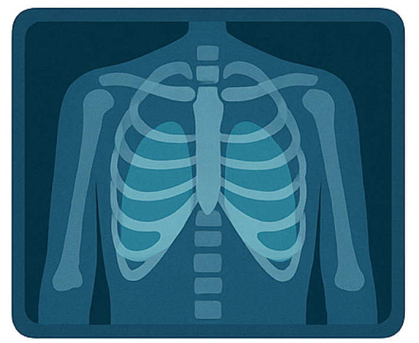

Analisis Rontgen Dada
Pasien menunjukkan tanda-tanda terinfeksi TBC

Keyakinan
Model yakin dengan diagnosis ini
Profisien
96%
TBC

Ringkasan Hasil
Hasil analisis menunjukkan adanya indikasi infeksi TBC.
Format file yang didukung: JPG, JPEG, atau PNG.
Tindak Lanjut

Konsultasi dengan dokter untuk diagnosis lebih lanjut.

Lakukan tes laboratorium sesuai anjuran dokter.